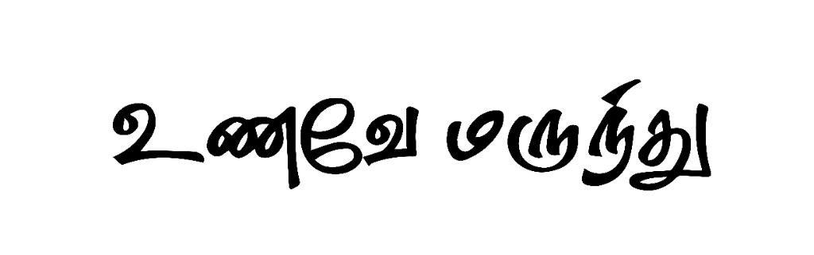

India's First Platform of Naturally Fermented
Functional Beverages. Grounded in Heritage.
Validated by Science.
Fermented indigenous grains. Species-specific medicinal mushroom extracts. One production platform. Three functional outcomes. Built at the intersection of traditional Indian food science and modern fermentation biotechnology.
Incorporated · CIN: U72100TZ2026PTC038160
Incubated at TBI-DETI@ACE, Adhiyamaan College of Engineering, Hosur
Incorporated · CIN: U72100TZ2026PTC038160 · Incubated at DETI@ACE TBI, Hosur
The industry is built on bad biology.
Products are formulated for shelf appeal, not cellular absorption. The result is an illusion of health, built on synthetic isolates and biologically unusable materials.
Read Our Full ManifestoForgotten Biology
The market is flooded with unverified imported synthetic isolates, aggressively ignoring indigenous Indian knowledge frameworks.
The Absorption Dilemma
Standard iron or zinc supplements cause severe stomach disruption because they don't dissolve. Your body battles them instead of absorbing them.
Engineering the Fix
We are building solutions using fundamentally powerful substrates like mushrooms and millets—unlocking them through biotechnology to fix the absorption gap.
Incubating Solutions in the Biological Laboratory.
A robust fermentation-driven platform leveraging indigenous Ragi and Karuppu Kavuni to dramatically enhance the bioavailability of target functional compounds.
Follow the Build.
We publish our R&D journey — protocol notes, run data, and formulation decisions — as they happen. No marketing spin. Results regardless of outcome.